HousePlants pairs a 727-plant database (including 178+ illustrated species) with calibrated horticultural tools — AR light meter, symptom-based plant doctor, NPK dosing, lunar planting calendar, and more.
727
Plants
12
Pro tools
100%
Offline
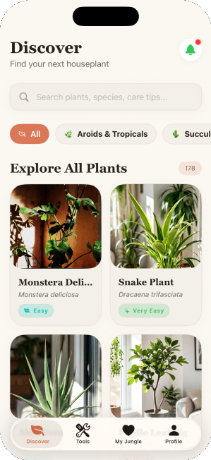
Inside the app
Every screen treats plants as objects of beauty. We've replaced cluttered feeds and aggressive alerts with hand-drawn botanical illustrations, editorial serif typography, and tactile interactions. It's a calm, offline-first space designed to feel as natural as the plants you keep.
High-contrast typography that mirrors classic botanical publications and luxury print design.
Bespoke line art and plant representations that capture the unique soul of each species.
Fluid animations, responsive haptics, and a clean interface designed to feel physical.
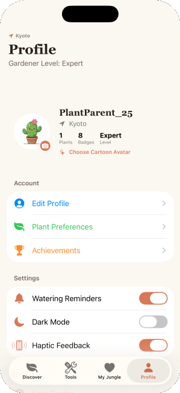
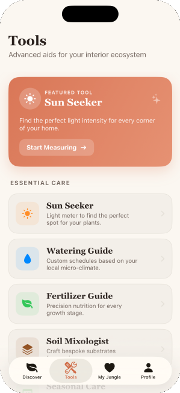
Features
From watering reminders to AR light measurement, HousePlants gives you everything a serious plant parent needs — and nothing they don't.
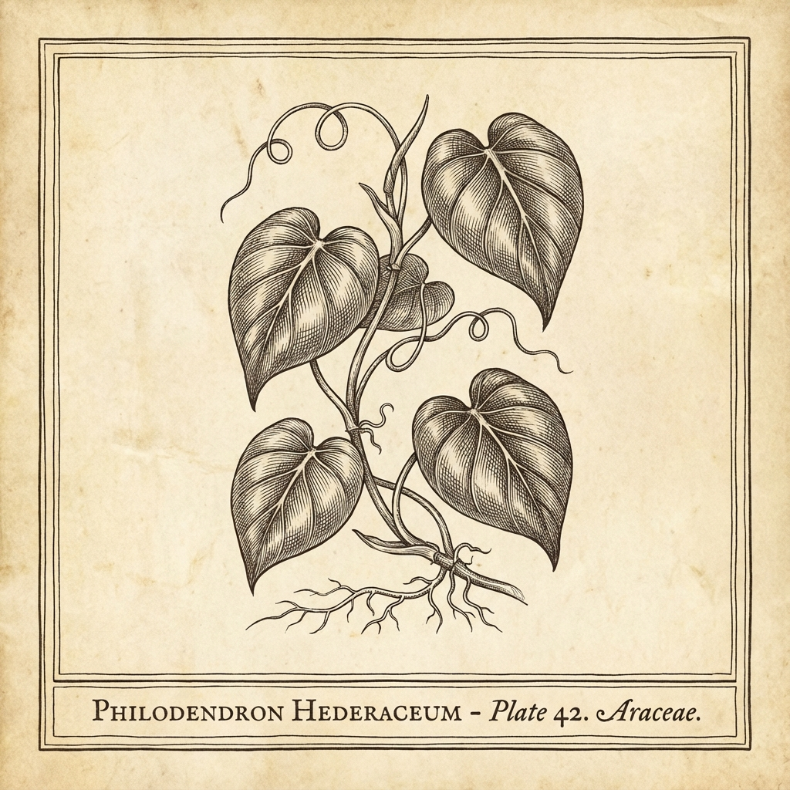
Smart Watering
Species-aware schedules adapt to pot size, season, and climate. Bulk-water with one tap.
Streaks
14
day streak
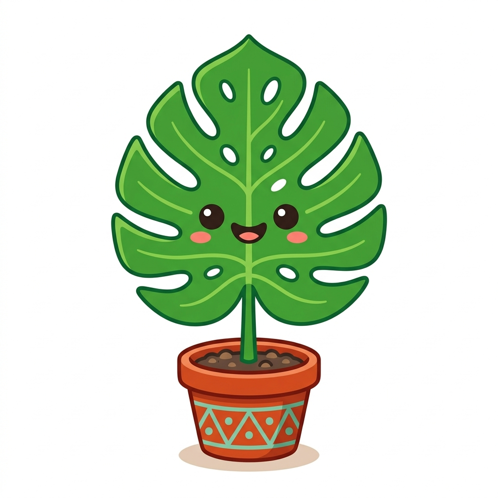
Avatars
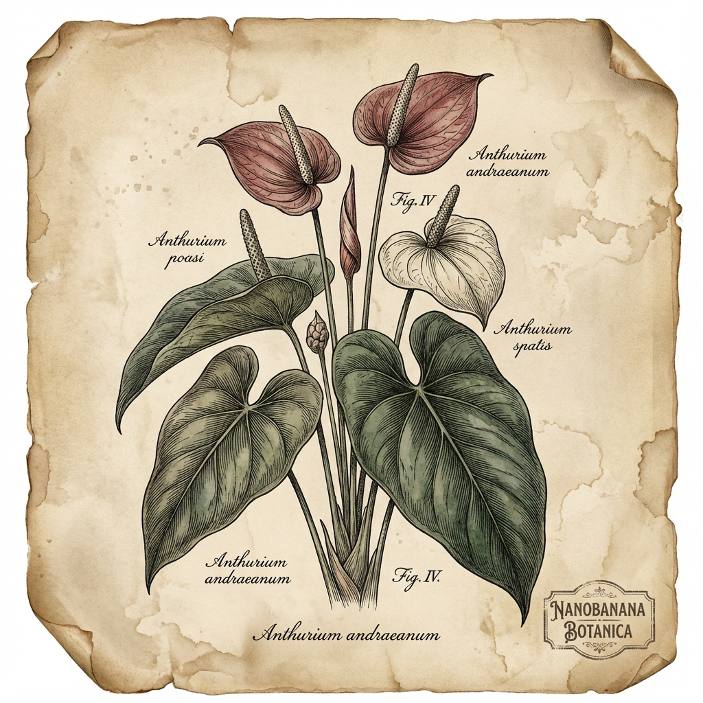
Plant Doctor
Symptom wizard maps yellow leaves, brown tips, and pests to probabilistic causes — then walks you through the fix.
Pro toolkit
Every calculator uses real horticultural formulas — from foot-candle readings to NPK dosing.
Plants suited to your city, via GPS.
Foot-candle readings with AR overlay.
Adjusted for pot size and season.
Pest ID and treatment via symptoms.
Liquid, granular, slow-release dosing.
Recipes with shopping list export.
Pet & child safety lookups.
Step-by-step propagation guides.
Month-by-month adjustments.
Lunar planting calendar.
Native habitat map per species.
Growth-based repotting picks.
The catalog
Every entry: light, water, humidity, temperature, soil, propagation, and toxicity. Searchable, filterable, and beautifully illustrated.
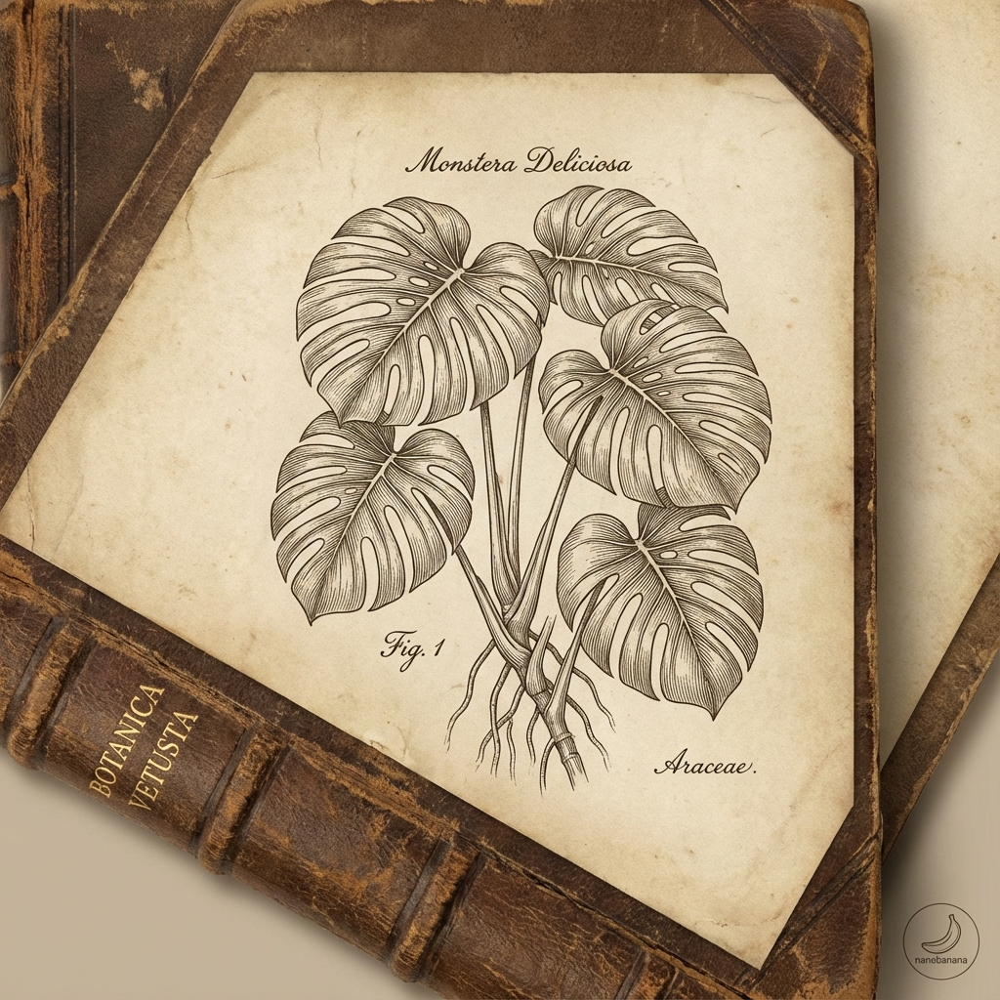
Monstera
M. deliciosa
Anthurium
A. andraeanum
Philodendron
P. hederaceum
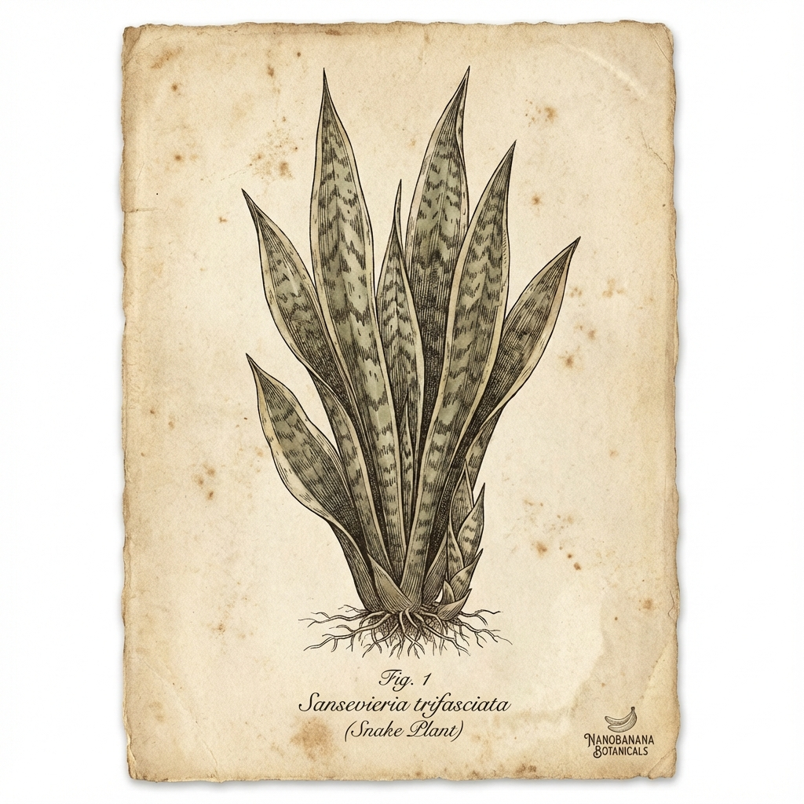
Snake Plant
D. trifasciata
Onboarding
Set the vibe of your HousePlants profile with a curated avatar.
Monstera
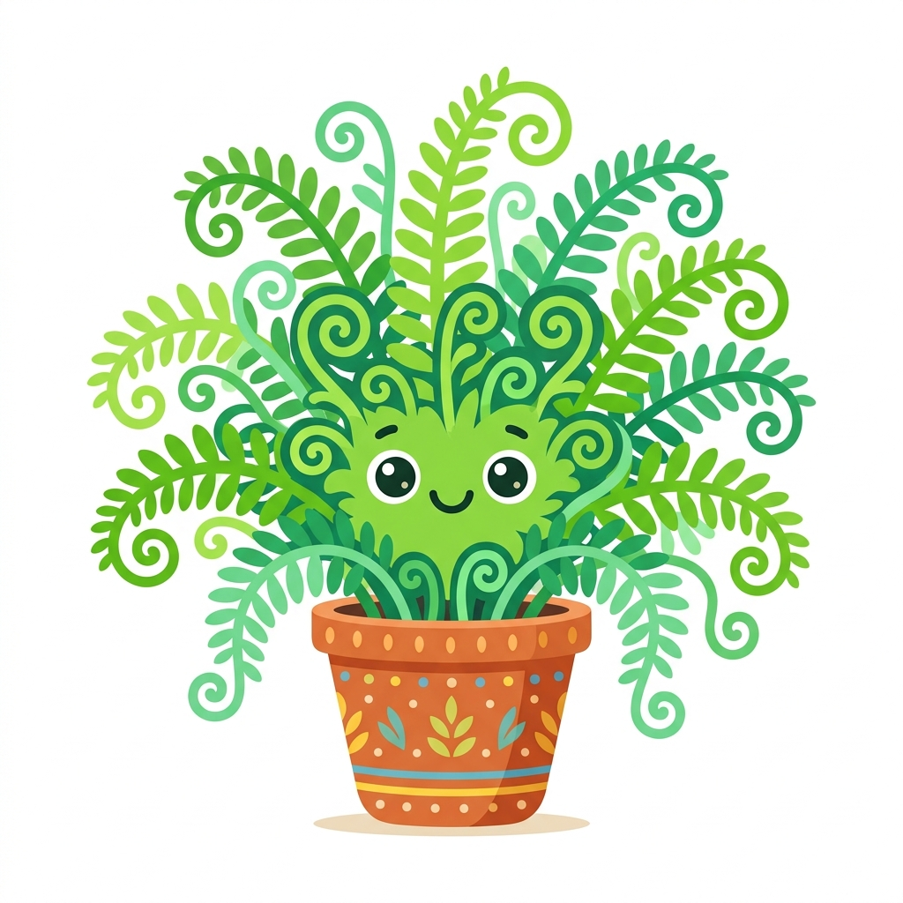
Fern
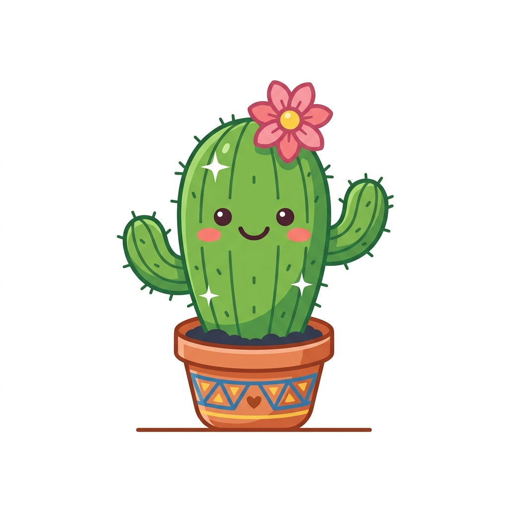
Cactus
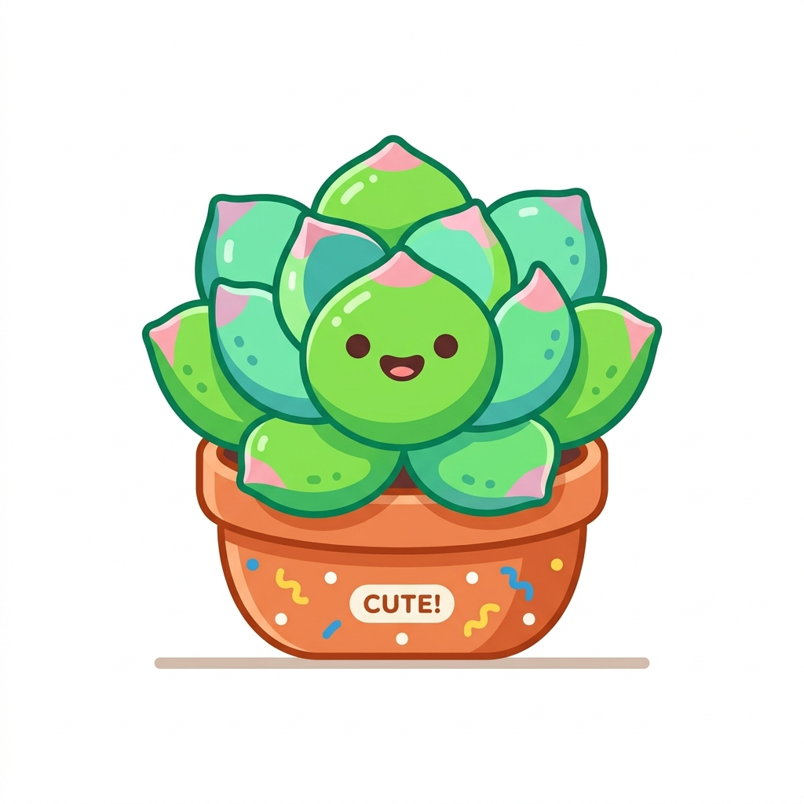
Succulent
Built natively for iOS 17+. Offline-first. No account, no tracking.